A Camilo SAT atua na instalação de rastreadores Onix Sat com foco em qualidade, agilidade e segurança. Nossa equipe técnica é especializada no atendimento de veículos leves, pesados e frotas, oferecendo instalações organizadas e suporte eficiente para empresas e motoristas.
Transformar a logística de nossos parceiros com tecnologia, eficiência e compromisso, garantindo operações mais seguras e organizadas.
Ser referência em soluções tecnológicas para logística, conectando veículos e operações com segurança, inovação e eficiência.
Atuar com transparência, compromisso e respeito, construindo relações de confiança com clientes, parceiros e colaboradores.
Garantir qualidade, segurança e eficiência em cada serviço realizado, buscando sempre a satisfação de nossos parceiros.
Instalação profissional de rastreadores Onix Sat para diversos tipos de veículos.
Soluções inteligentes para localização, controle e segurança veicular.
Soluções para controle, rastreamento e acompanhamento de veículos e operações logísticas.
Equipe especializada para suporte e acompanhamento técnico eficiente.
Atendimento rápido e suporte técnico emergencial.
Serviços focados em proteção, rastreamento e controle veicular.
Estamos prontos para atender você com agilidade, suporte técnico e eficiência.
R. Mata Grande, 1111 - GP C - Prazeres, Jaboatão dos Guararapes - PE, 54340-002
Segunda à Sexta — 08h às 18h
Sabádo — 08h às 12h